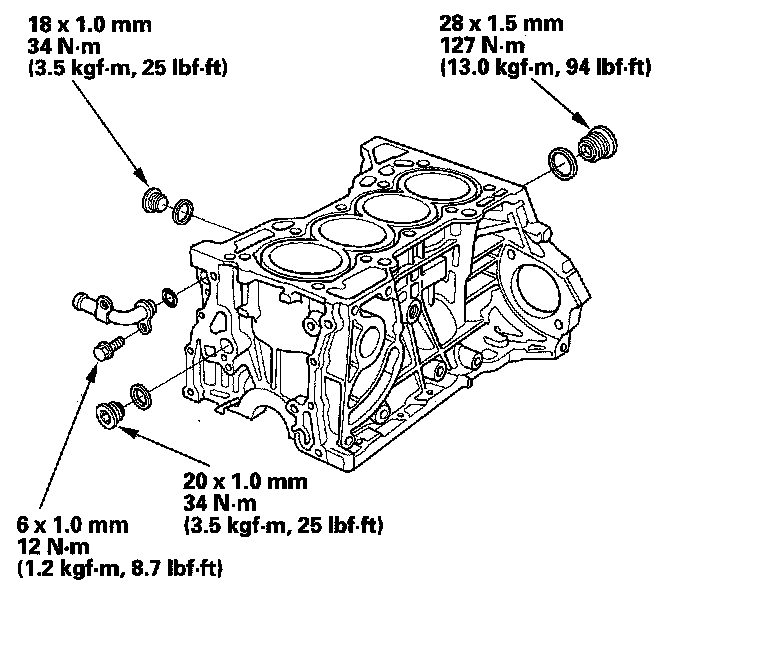

Operation CHARM
: Car repair manuals for everyone.
Home
>>
Honda
>>
2007
>>
Civic Si L4-2.0L
>>
Repair and Diagnosis
>>
Engine, Cooling and Exhaust
>>
Engine
>>
Cylinder Block Assembly
>>
Service and Repair
>>
Removal and Replacement
>>
Sealing Bolt and Joint Pipe Installation
Sealing Bolt and Joint Pipe Installation
Sealing Bolt and Joint Pipe Installation
NOTE:
^
When installing the sealing bolt, always use a new washer.
^
When installing the joint pipe, always use a new O-ring.
